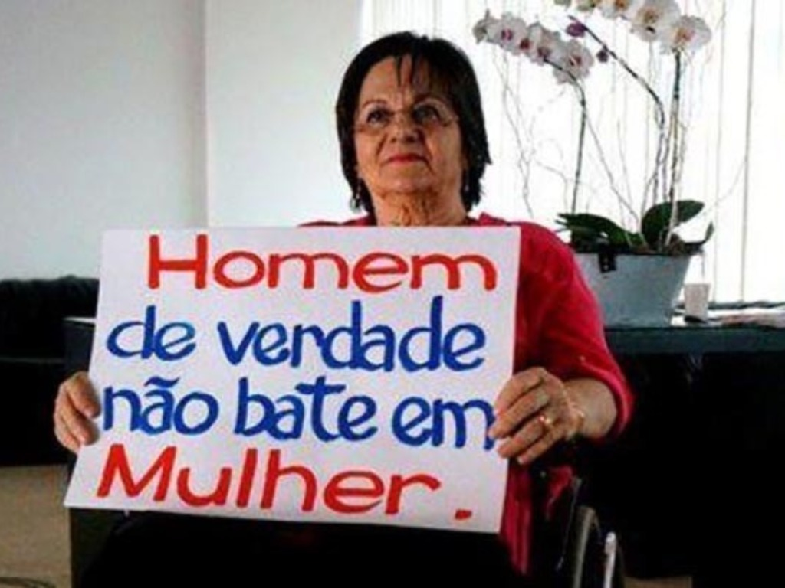
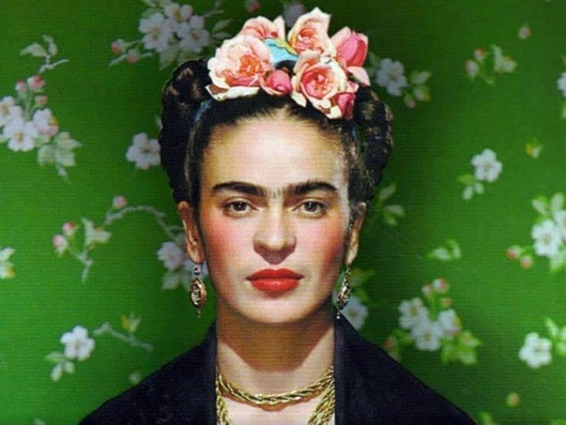
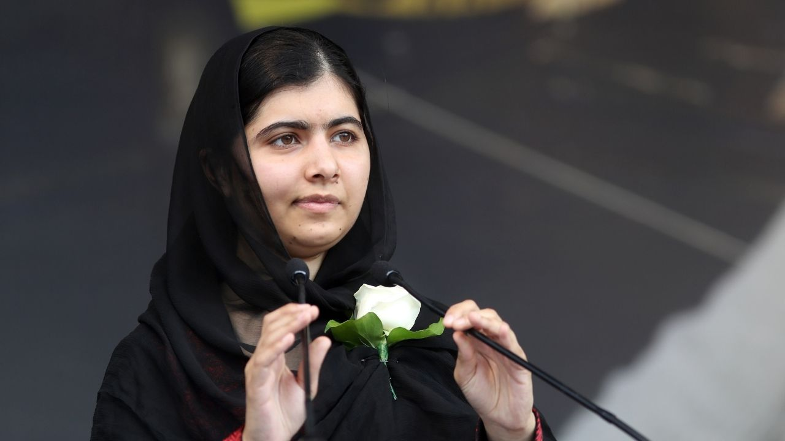
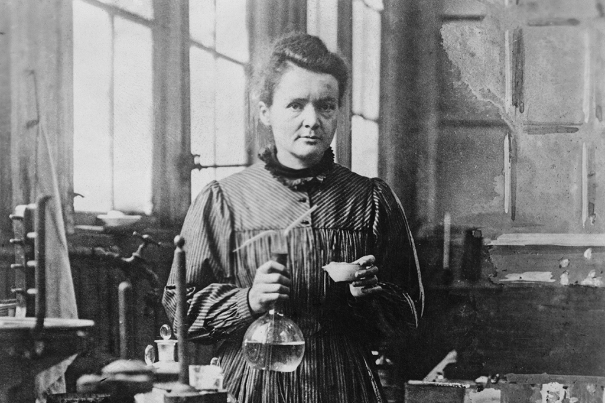

O Dia Internacional da Mulher não nasceu de celebrações, mas de cinzas e coragem. Em 1911, um incêndio na Triangle Shirtwaist Company em Nova York tirou a vida de 146 trabalhadores — maioria mulheres — que lutavam por dignidade e melhores condições. Mas a chama se espalhou. Do levante das russas em 1917 pelo "Pão e Paz" até a oficialização pela ONU em 1975, o 8 de março tornou-se o símbolo de uma luta que atravessa séculos. Este espaço existe para lembrar que a história foi escrita por mulheres insubmissas — e que o próximo capítulo pertence a você.
Vidas perdidas em 1911
Anos de Luta Organizada
Reconhecimento pela ONU
A Lei Maria da Penha é um marco no combate à violência doméstica no Brasil, criada após a farmacêutica Maria da Penha Maia Fernandes sofrer duas tentativas de feminicídio por seu marido nos anos 80, permanecendo paraplégica. Sancionada em 7 de agosto de 2006, a lei endureceu punições, eliminou penas alternativas, criou medidas protetivas e juizados especializados — sendo reconhecida como uma das melhores legislações do mundo no combate à violência doméstica.

Farmacêutica que lutou durante 19 anos para que seu agressor fosse condenado, tornando-se símbolo mundial da luta contra a violência doméstica.

Artista plástica cuja obra singular e vida irreverente a tornaram ícone cultural e símbolo de identidade, resistência e feminismo.

Ativista pela educação feminina, sobrevivente de atentado e mais jovem ganhadora do Prêmio Nobel da Paz, em 2014.

Primeira mulher a ganhar o Nobel e única pessoa a ganhar o Nobel em duas áreas diferentes — Física e Química — desafiando o machismo na ciência.
"Ela não morreu de acidente.
Ela não morreu de doença.
Ela foi morta — por ser mulher."
Feminicídio é o assassinato de uma mulher motivado pelo simples fato de ela ser mulher. Não é crime passional. Não é tragédia do destino. É a forma mais extrema de uma violência que começa muito antes — em palavras, controles, humilhações e silêncios. É o fim de uma história que poderia ter sido interrompida.
Toda vez que alguém vê um relacionamento controlador e não faz nada, o silêncio se torna cúmplice. A violência raramente começa com um soco — ela começa quando alguém acha que tem o direito de decidir o que a outra pessoa pode vestir, falar ou sentir.
A maioria das mulheres assassinadas morrem em casa, pelas mãos de alguém que dizia amá-las. Isso nos obriga a perguntar: o que ensinamos sobre amor? Amor não prende, não isola, não bate. Amor que machuca não é amor — é poder disfarçado de afeto.
Se você é homem: como você fala sobre mulheres quando elas não estão? Se você é mulher: você saberia reconhecer os sinais antes que fosse tarde? Feminicídio não é só um problema de quem mata — é um problema de uma cultura que ainda normaliza o controle.
A mudança não está só na lei. Está em como você trata a menina da sua sala. Em como você reage quando um amigo faz uma piada machista. Em como você cuida da sua própria masculinidade ou da sua autoestima. Cada ato importa. Cada voz importa.
Deixe essas perguntas te incomodar:
Informação é proteção. Essas organizações e vozes estão nas redes todos os dias — educando, acolhendo e lutando. Seguir, compartilhar e amplificar essas vozes já é um ato de resistência.
Campanhas como os "21 Dias de Ativismo" previnem e combatem a violência contra mulheres e meninas, incluindo violência digital.
Helpline gratuita contra crimes de ódio e violações de direitos humanos na internet — proteção contra misoginia e exposição íntima.
Fundado pela própria Maria da Penha Maia Fernandes. Educação e conscientização sobre a Lei e os direitos das mulheres.
Pesquisa e dados sobre a realidade das mulheres no Brasil. Criadora do projeto #MeuAmigoSecreto, que viralizou nas redes.
Defende os direitos humanos de mulheres, combate tortura, discriminação e violência de gênero com campanhas globais.
Jornalismo feminista independente com foco em combate à desinformação sobre direitos das mulheres e combate à violência.
Organização de mulheres negras que atua na defesa dos direitos humanos com foco no combate ao racismo e à violência de gênero.
Jornalista referência no Brasil. Voz ativa contra a violência doméstica e pela igualdade de direitos nas mídias e redes sociais.
Filósofa, escritora e ativista. Uma das vozes mais importantes do feminismo negro no Brasil. Autora de "Quem tem medo do feminismo negro?".
Leva adiante o legado da vereadora assassinada, com projetos voltados para mulheres negras e periféricas e direitos políticos.
Comunicação e mídia feminista brasileira. Produz e difunde informações sobre direitos das mulheres com rigor jornalístico.
Fundação global de Malala Yousafzai que luta pelo direito à educação de meninas em todo o mundo, especialmente em zonas de conflito.
Se você ou alguém que você conhece precisa de ajuda:
Em caso de perigo imediato, ligue 190. Você não precisa ter certeza para pedir ajuda — a dúvida já é motivo suficiente.